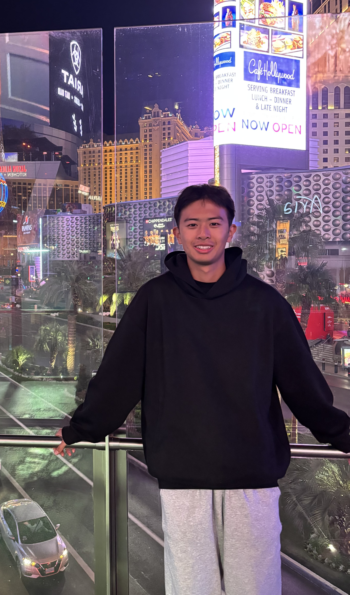
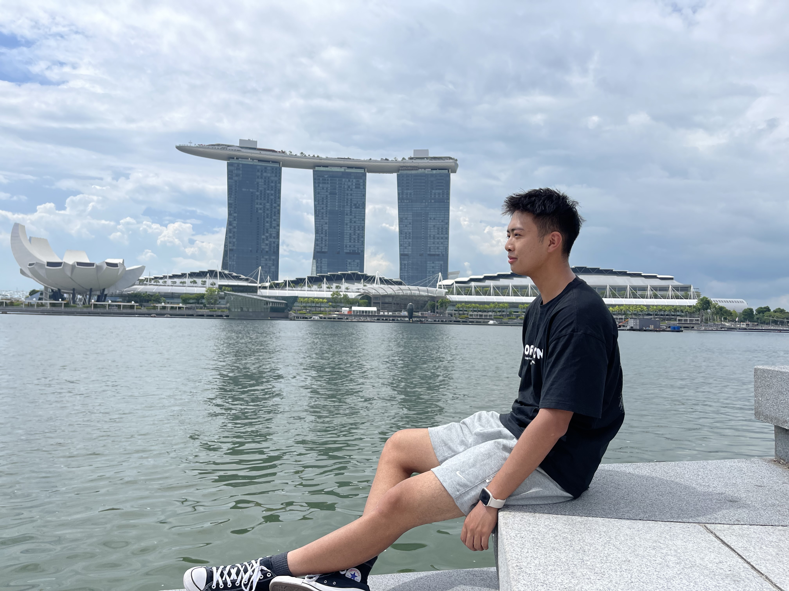

Free Sperm Donor Available
Thank you for taking the time to read my story!
I'm currently a student based in Southern California. I'm happy to help intended parents from all backgrounds through sperm donation, regardless of nationality, religion, or sexual orientation. I'm especially proud to support LGBTQ+ individuals and families. I have vials stored at California Sperm Bank. I am open to donating IUI/IVF vials, as well as at-home artificial insemination, and I am happy to discuss other options.




Donation Details
- Vials
- Frozen IUI vials stored at a fertility clinic
- Shipping
- Within the US, to a clinic or home if approved
- Agreement
- Signed known-donor agreement required before release
- Future Contact
- Open to child-initiated contact at age 18
How It Works
- Connect: Share your background, location, and family-building plans.
- Discuss: Get to know each other and agree on expectations.
- Finalize: Sign an agreement and complete clinic requirements.
- Ship: Arrange shipment once approved by the clinic.
About Me
I'm 185 cm (6'1"), with black hair. I hold a bachelor's degree in Telecommunications Engineering and am pursuing graduate research in Electrical and Computer Engineering. My interests include mathematics, fitness, and history.
Contact
Feel free to introduce yourself and share your plans. Recent photos are welcome but optional.